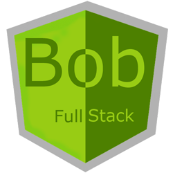

Quick guide to getting up and running today
All developers should be full stack developers with at least one specialty. My career began in the early 90's in networking, late 90's I began to specialize in database development, with the advent of COM/DCOM I focused on RPC programming then continued with Web Services/WCF. Now I'm completly focused the Modern Web with SQL Server, WebApi(MVC6), C#, and HTML5/CSS/JS/AngularJS. Other related technologies include NodeJS, NPM, Grunt, Gulp, Github, etc.

ASP.NET
HTML5, JS, CSS, SCSS, JSON
Durandal Framework
AngularJS Framework
Lodash, bootstrap, font-awesome
jqwidgets, jquery, ocLazyLoad, YDN-DB
SQL Server
Oracle
WebApi(MVC6)
WCF
Web Service
Azure
Visual Studio .NET
SQL Server Enterprise Manager
SQL Developer
Subversion, Github
Markdown
Browser Dev Tools
Programmer - (I'm happiest when doing this!!)
Architect - (Second only to programming)
Mentor - (I've had great mentors. I hope to pay it forward.)
Teacher - (SQL Server, WebApi(MVC6), Angular)
Author - (The Book of Visual Studio .NET)
Co-Founder - (Rhea Innovations and RITS Tracker)
When I first heard this term I immediately identified with it. We are surrounded by Technical Debt on all sides.Even as many agree it's a problem they take shortcuts creating more debt. The interest adds up and one day someone has to pay the debt in the form of an expensive re-write or failing to serve the business in some way.There is always a good reason to do the wrong thing. This is a battle we can fight now or our failure will be measured against it later.The MashupJS is intended to reduce Technical Debt.
Steve McConnel
Scott Hanselman
Jeffrey Richter
Rob Eisenberg
Joel Spolsky
Dan Wahlin
John Papa
John Sonmez